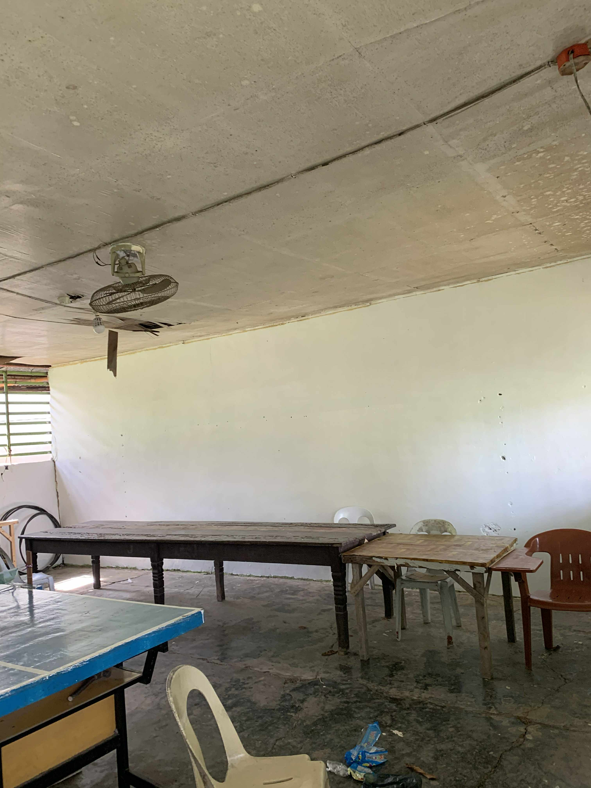
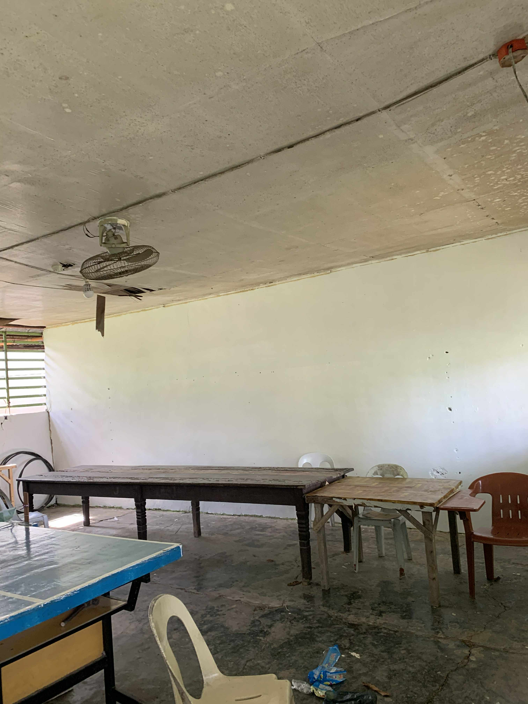

Outdated Learning Environments
Many schools around the world still struggle with outdated learning environments. These include old or damaged classrooms, broken chairs, limited teaching tools, poor ventilation, and unsafe building structures. Such environments make learning uncomfortable and reduce the student's ability to focus and succeed academically.
A good learning environment should be safe, clean, and equipped with modern educational tools. When students study in outdated spaces, their motivation drops, teachers struggle to teach effectively, and learning performance declines.
Common Problems in Outdated Environments
- Cracked walls, leaking roofs, and unsafe classrooms
- Old desks and chairs that are uncomfortable or broken
- Limited lighting or poor ventilation
- No computers, projectors, or updated learning tools
- Crowded classrooms that make learning difficult
 

Solutions to Outdated Environments
Upgrading school environments is essential to improving education quality. Here are solutions that can help create safe, modern, and inspiring learning spaces.
School Renovation Programs
Governments and NGOs can fund the repair of classrooms, roofs, floors, and facilities to create safer learning spaces.
Modern Classroom Equipment
Updating schools with new chairs, tables, whiteboards, and multimedia tools gives teachers and students better learning experiences.
Technology Upgrades
Providing computers, projectors, and internet access helps teachers improve lessons and allows students to explore digital learning resources.
Community Participation
Local volunteers, parents, and youth groups can help repaint classrooms, clean school grounds, or repair minor damage to improve the environment.